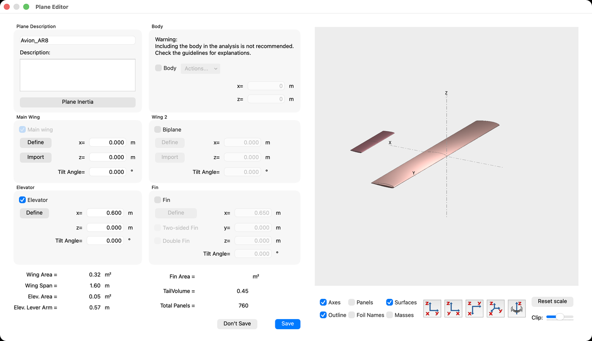
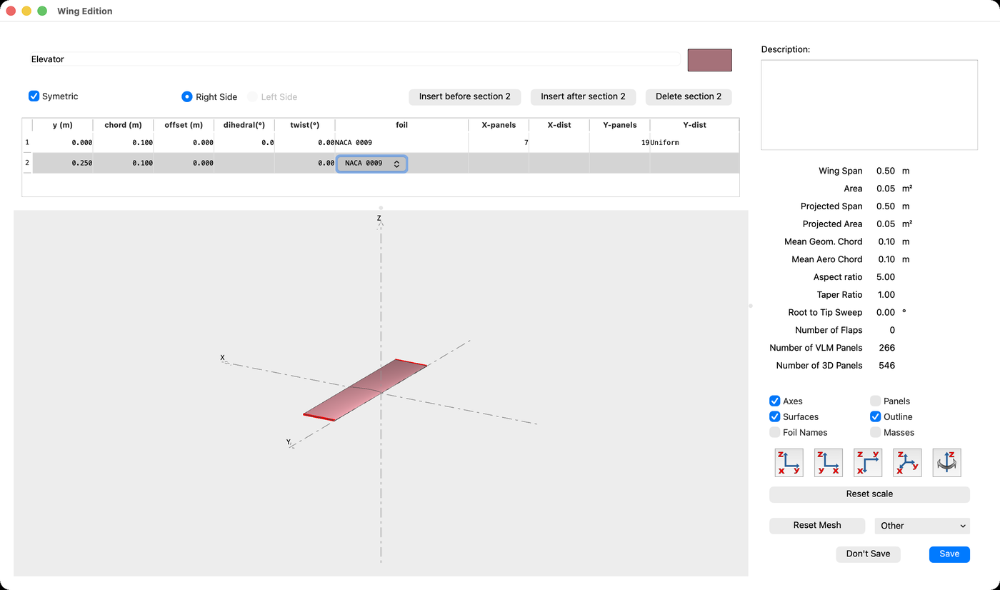
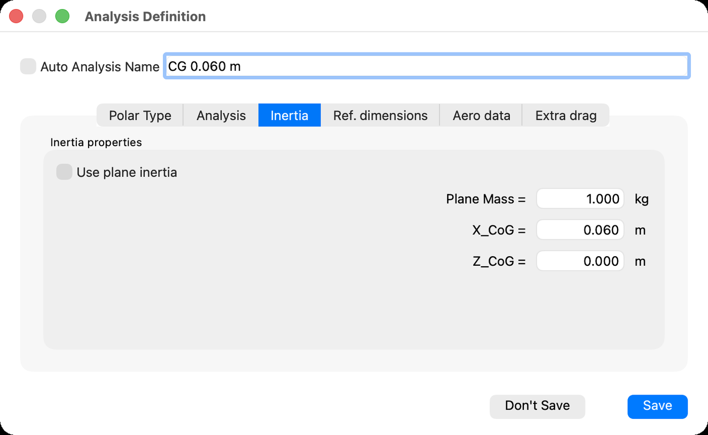
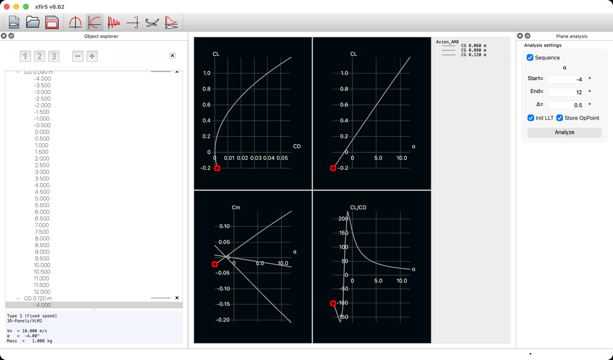
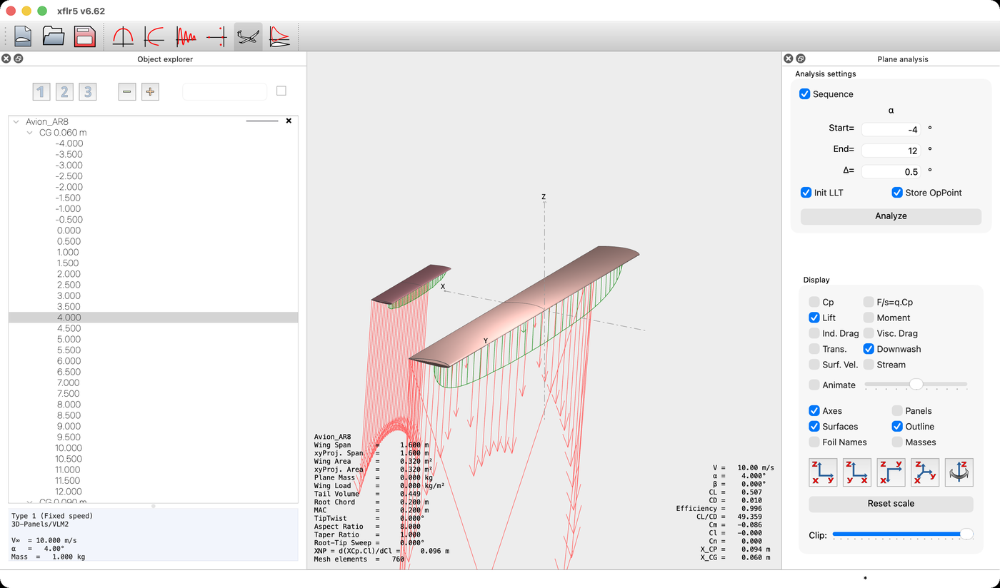
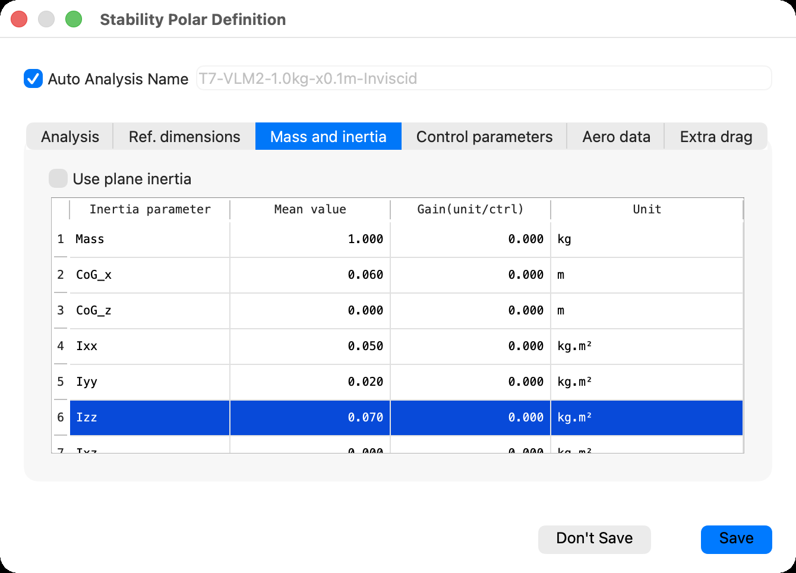
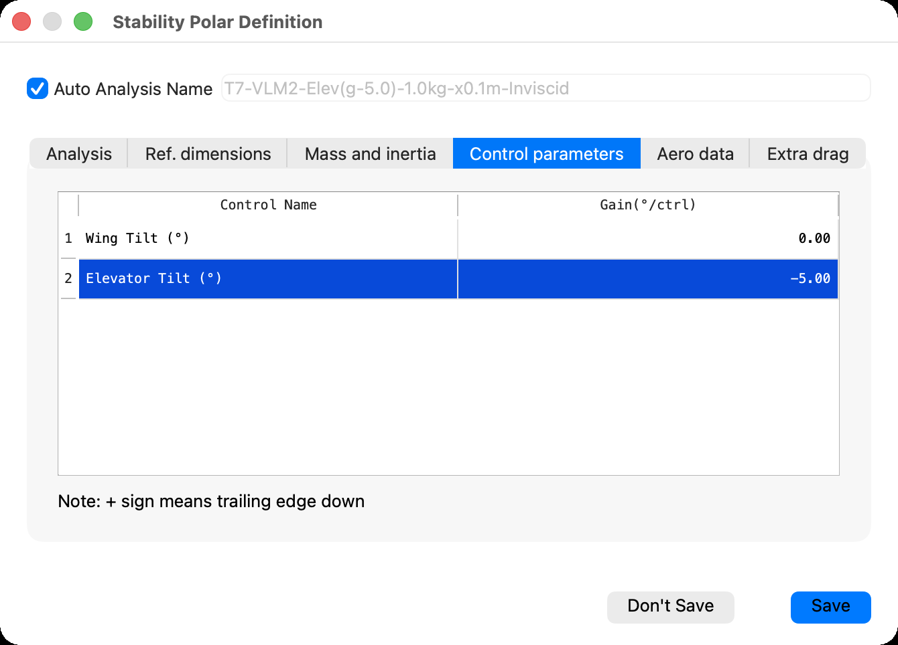
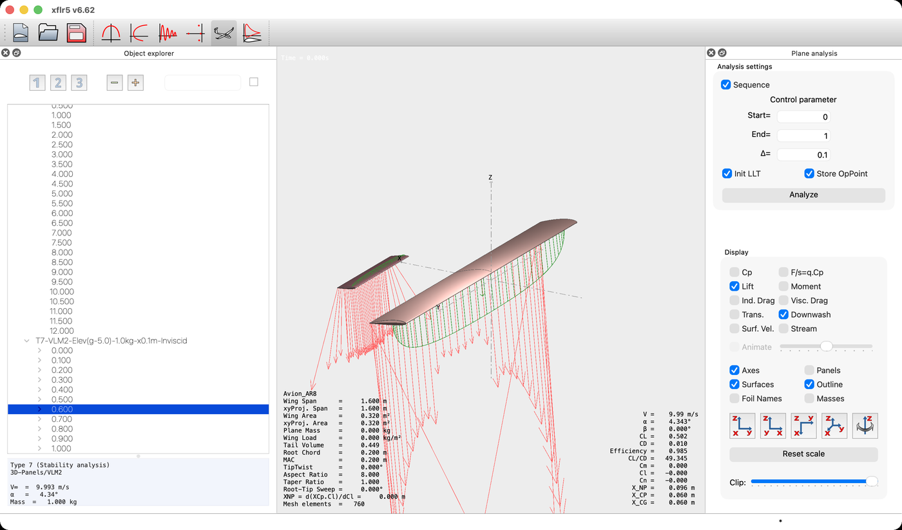

A disturbed aircraft returns to its angle only if its centre of gravity lies ahead of a point that does not depend on it. How to find that point, how much margin it leaves, and why a stable aircraft still needs the elevator to fly.
XFLR5 · Tutorial 3.3
Estabilidad estática longitudinal
Un avión perturbado vuelve a su ángulo sólo si su centro de gravedad está por delante de un punto que no depende de él. Cómo encontrar ese punto, cuánto margen deja, y por qué un avión estable todavía necesita el elevador para volar.
XFLR5 · Tutorial 3.3
Statische Längsstabilität
Ein gestörtes Flugzeug kehrt nur dann zu seinem Anstellwinkel zurück, wenn sein Schwerpunkt vor einem Punkt liegt, der nicht von ihm abhängt. Wie man diesen Punkt findet, wie viel Reserve er lässt und warum ein stabiles Flugzeug trotzdem das Höhenruder zum Fliegen braucht.
Estimated reading: 40 minLectura estimada: 40 minLesedauer: ca. 40 minLevel: undergraduateNivel: licenciaturaNiveau: BachelorVerified on XFLR5 v6.62Verificado en XFLR5 v6.62Geprüft mit XFLR5 v6.62
Full English translation in preparation. Each section below carries a summary of its content; the complete text, figures and tables are available in the Spanish version, which the ES button above selects.
State the static longitudinal stability condition and read it in the sign of the \(C_m\)–\(\alpha\) slope; complete the aircraft with a tailplane and declare mass and centre of gravity per analysis; obtain the neutral point three ways and check that they agree; compute the static margin; and trim the aircraft with the tailplane incidence, reading the corresponding flight speed. In the series syllabus this tutorial follows 3.1 and 3.2, not yet published, so it includes the minimum of both.
The physics
What makes an aircraft return to its angle
An aircraft is statically stable if a nose-up disturbance produces a nose-down moment about its centre of gravity: \(\mathrm{d}C_m/\mathrm{d}\alpha < 0\). The increment of lift acts at the neutral point; the static margin \(K_n = (x_N - x_{CG})/\bar c = -\mathrm{d}C_m/\mathrm{d}C_L\) measures how far ahead of it the centre of gravity sits. The wing alone of Tutorial 2.1 had its neutral point at 0.049 m; the tailplane moves it aft.
Scope and limits
What this analysis measures, and what it does not
Inviscid VLM2 on wing and tailplane. It measures the \(C_m\) slope about the declared centre of gravity, the neutral point, and trim angle, lift and speed; it does not include profile drag, stall, the fuselage or the time response. In an inviscid analysis the coefficients do not depend on speed.
Orientation
Where the centre of gravity goes
The module is Wing and Plane Design. Mass and centre of gravity can be declared on the plane (Plane Inertia, point masses) or per analysis (Inertia tab, Use plane inertia unchecked); this guide uses the latter to run one analysis per centre of gravity. With nothing declared, the moment is taken at the wing leading edge.
Step 1
Completing the aircraft with a tailplane
Define a New Plane: the wing of Tutorial 2.1, fin unchecked, and a rectangular NACA 0009 tailplane of 0.500 × 0.100 m with its leading edge at 0.600 m. The editor reports a lever arm of 0.57 m and a tail volume of 0.45.
Step 2
One analysis per centre of gravity
Three identical Type 1 inviscid VLM2 analyses at 10 m/s with 1.000 kg and the centre of gravity at 0.060, 0.090 and 0.120 m, each named by hand: the automatic name rounds the position to 0.1 m. With a tailplane present, 3D Panels is no longer offered.
Step 3
Reading the Cm–α slope
The lift curves coincide; the \(C_m\)–\(\alpha\) slopes are −0.0156, −0.0023 and +0.0109 per degree. The three lines cross where lift vanishes, near −2°: with zero tailplane incidence the stable aircraft trims at \(C_L \approx 0\).
Step 4
The neutral point and the static margin
From \(\mathrm{d}C_m/\mathrm{d}C_L\) the three centres of gravity give the same neutral point, 0.095 m, and static margins of +17.6 %, +2.6 % and −12.3 %. XFLR5 reports XNP = 0.096 m; the lift-weighted estimate from the wing and tailplane slopes gives 0.0966 m.
Step 5
Trimming with the elevator
A Type 7 stability analysis with Elevator Tilt at −5° per control unit finds, for each incidence from 0° to −5°, the angle with \(C_m = 0\) and the speed at which that lift carries the weight. At −3° the aircraft trims at 4.34°, \(C_L = 0.502\) and 9.99 m/s; \(V = \sqrt{2W/\rho S C_L}\) reproduces every speed within 0.3 %.
Suggested exercise
How much tail is enough
Change the tailplane chord to 0.080 m and 0.120 m and record tail volume, neutral point from XFLR5 and from theory, static margin at 0.060 m, and the incidence that trims at \(C_L = 0.5\).
Key points
Four statements and two relations
Stability is the sign of the \(C_m\) slope; the neutral point belongs to the aircraft, not to the load; stable is not trimmed; and in trimmed flight the tailplane incidence sets \(C_L\), and the weight sets the speed.
Common mistakes
Errors of interpretation that invalidate a stability study
Reading the slope without checking X_CG; confusing stable with trimmed; thinking the neutral point moves with the centre of gravity; accepting an unstable equilibrium; taking the Type 1 speed as flight speed; reading the dynamic modes of the Stability window as part of this study; extrapolating the margin to high angles.
Sources
References
Etkin and Reid, Dynamics of Flight: Stability and Control; Nelson, Flight Stability and Automatic Control; Anderson, Introduction to Flight; Deperrois, Guidelines for XFLR5.
Objetivos de aprendizaje
Qué se debe poder hacer al terminar
El Tutorial 2.1 dejó un ala que sustenta bien y una cifra sin usar: el punto neutro que el programa reportaba en el recuadro de la vista tridimensional. Esta guía convierte esa ala en un avión y pregunta si ese avión, perturbado, vuelve solo a su ángulo. Al terminarla debe ser posible:
Enunciar la condición de estabilidad estática longitudinal y leerla en el signo de la pendiente \(C_m\)–\(\alpha\).
Completar el avión con un estabilizador y declarar, en cada análisis, la masa y la posición del centro de gravedad.
Obtener el punto neutro de tres maneras —la que reporta XFLR5, la que se deduce de las pendientes y la que da la teoría— y comprobar que coinciden.
Calcular el margen estático y explicar por qué un avión estable puede, aun así, no servir para volar.
Trimar el avión con la incidencia del estabilizador y leer en el resultado la velocidad de vuelo que le corresponde.
Una nota sobre el orden. En el temario de la serie, este tutorial va después del 3.1 —estabilizador, masas y centro de gravedad— y del 3.2 —el fuselaje—, que todavía no están publicados. Para que la guía se sostenga sola, incluye lo mínimo de ambos: cómo añadir un estabilizador y dónde se declara el centro de gravedad. Todo lo demás de este tutorial no depende de ellos.
La física
Qué hace que un avión vuelva a su ángulo
Un avión en vuelo recibe perturbaciones continuamente: una ráfaga levanta la nariz y el ángulo de ataque crece unas décimas de grado. Lo que ocurra en el instante siguiente depende de un solo signo. Si el momento de cabeceo que aparece tiende a bajar la nariz, el avión regresa hacia el ángulo del que partió: es estáticamente estable. Si tiende a subirla todavía más, la perturbación se amplifica sola.
Escrito con el coeficiente de momento de cabeceo respecto del centro de gravedad, positivo cuando levanta la nariz, la condición es
La palabra estática importa. La condición dice hacia dónde apunta el momento en el primer instante, no cómo evoluciona después el movimiento: un avión estáticamente estable puede oscilar varias veces antes de asentarse. Esa segunda pregunta es la estabilidad dinámica, que queda fuera de esta serie.
Figura 1.Qué decide el signo del momento. Arriba, el avión de esta guía a escala en la dirección de vuelo: la sustentación del ala actúa cerca de su cuarto de cuerda, la del estabilizador a 0.575 m por detrás, y el peso en el centro de gravedad. Abajo, la cuerda del ala ampliada. El punto neutro, en 0.095 m, separa las posiciones del centro de gravedad que dan un avión estable de las que lo dan inestable; los tres puntos son los casos que se analizan en los pasos 2 a 4, con su margen estático.
De dónde sale el momento que restituye
Al crecer el ángulo de ataque crecen a la vez la sustentación del ala y la del estabilizador. Cada una actúa en el centro aerodinámico de su superficie, y lo que decide el signo del momento total es dónde queda, respecto del centro de gravedad, el punto en el que actúa el incremento de sustentación del conjunto. Ese punto es el punto neutro.
Si el centro de gravedad está por delante del punto neutro, el incremento de sustentación actúa detrás del centro de gravedad y baja la nariz: estable. Si está detrás, la sube: inestable. Si coinciden, el avión es indiferente. La distancia entre ambos, adimensionalizada con la cuerda media, es el margen estático:
La segunda igualdad es la que se va a comprobar con el programa: la pendiente de \(C_m\) frente a \(C_L\) es el margen estático con el signo cambiado.
Por qué hace falta la cola
El ala sola tiene su punto neutro cerca de su cuarto de cuerda. El Tutorial 2.1 lo midió sin decirlo: el recuadro de su vista tridimensional mostraba \(XNP = 0.049\) m para una cuerda de 0.200 m. Un centro de gravedad por delante de ese punto daría un ala estable, pero con tan poco margen que cualquier carga útil lo desplazaría. El estabilizador, a más de medio metro por detrás, lleva el punto neutro del conjunto hacia atrás y deja sitio para el centro de gravedad. Cuánto lo lleva es lo que mide este tutorial.
Alcance y límites
Qué mide este análisis y qué no mide
El análisis es el mismo VLM2 no viscoso del Tutorial 2.1, ahora sobre dos superficies. Conviene tener claro qué se puede concluir de él.
Lo que mide
Lo que no mide
La pendiente \(C_m\)–\(\alpha\) respecto del centro de gravedad que se declara en el análisis
El arrastre de perfil: el cálculo es no viscoso, y el \(C_L/C_D\) que muestra sólo incluye el inducido
La posición del punto neutro, que el programa reporta como XNP
La pérdida: VLM2 es lineal, y los márgenes valen en el tramo recto de las curvas
El ángulo, la sustentación y la velocidad de trimado para cada incidencia del estabilizador
El fuselaje, que XFLR5 desaconseja incluir y que se estudiará aparte
La contribución del estabilizador, con el descenso inducido del ala sobre él
La respuesta en el tiempo: los modos que calcula el análisis de estabilidad son dinámica, no estática
Tabla 1.Alcance del estudio. La columna de la derecha no es una lista de defectos: son las decisiones que permiten aislar la estabilidad estática, y cada una hay que declararla al reportar un resultado.
Dos de esas decisiones merecen una línea. La primera: en un cálculo no viscoso los coeficientes no dependen de la velocidad, de modo que la velocidad del análisis Type 1 es sólo un rótulo. Se comprobó corriendo los mismos tres análisis a 10 y a 37.5 m/s: las polares exportadas coinciden en todas sus cifras. Se eligieron 10 m/s porque es del orden de la velocidad a la que vuela realmente un avión de 1 kg con esta ala, como se verá en el Paso 5. La segunda: los márgenes estáticos que se obtienen valen en el tramo lineal de las curvas. VLM2 no conoce la pérdida, y cerca de ella el estabilizador puede quedar en la estela del ala, algo que este modelo no representa.
Estática y dinámica en la misma ventana. El análisis de estabilidad que se usa en el Paso 5 calcula, además del trimado, los modos propios del avión, y al guardarlo el programa abre una ventana flotante titulada Stability con frecuencias y amortiguamientos. Pertenecen a la estabilidad dinámica. Aquí sólo se usa el trimado, y esa ventana se puede cerrar.
Orientación
Dónde se pone el centro de gravedad
Todo ocurre en el módulo Wing and Plane Design del Tutorial 2.1. La novedad está en dos sitios: el editor del avión, donde se activa el estabilizador, y el lugar donde se declara el centro de gravedad.

Figura 2.El editor del avión, con estabilizador y sin deriva. El ala es la del Tutorial 2.1 y el estabilizador está activado en su posición por omisión, \(x = 0.600\) m. Los recuadros inferiores confirman la configuración: Elev. Area = 0.05 m², Elev. Lever Arm = 0.57 m y TailVolume = 0.45, sin cifras de deriva. El botón Plane Inertia, arriba a la izquierda, es la otra vía para declarar masas y centro de gravedad.
Dos lugares para el centro de gravedad
XFLR5 ofrece dos maneras de declarar la masa y el centro de gravedad, y conviene saber cuál se está usando, porque el momento de cabeceo se calcula respecto de ese punto.
En el avión, con el botón Plane Inertia del editor: masas puntuales con su posición, de las que el programa deduce la masa total y el centro de gravedad. Es lo que corresponde a un avión real y lo que desarrollará el Tutorial 3.1.
En cada análisis, en la pestaña Inertia del diálogo de definición, desmarcando Use plane inertia y escribiendo directamente la masa y X_CoG.
Esta guía usa la segunda, porque permite correr el mismo avión con varios centros de gravedad sin tocar su definición: un análisis por posición.
Si no se declara nada, el momento se toma en el borde de ataque. Con Use plane inertia marcado y ninguna masa definida, el análisis corre con 0 kg y X_CG = 0. Las curvas salen, pero la pendiente \(C_m\)–\(\alpha\) describe un avión con el centro de gravedad en el borde de ataque del ala, que no es el que se quería estudiar. El recuadro de la vista 3D muestra X_CG: es lo primero que hay que mirar.
Paso 1
Completar el avión con un estabilizador
El avión se crea con Plane ▸ Define a New Plane, igual que en el Tutorial 2.1. El editor propone un avión con ala, estabilizador y deriva; para el estudio longitudinal basta con las dos primeras superficies.
Nombre del avión, sin espacios: Avion_AR8.
Desmarcar Fin. Elevator queda marcado.
Define del ala: la tabla del Tutorial 2.1 —cuerda 0.200 m en las dos secciones, semienvergadura 0.800 m, NACA 2412—. El panel debe decir alargamiento 8.00 y 494 paneles.
Define del estabilizador: semienvergadura 0.250 m, cuerda 0.100 m en las dos secciones, desplazamiento nulo, NACA 0009.
Comprobar en el editor Elev. Area = 0.05 y TailVolume = 0.45, y guardar.

Figura 3.El estabilizador, rectangular y simétrico. Dos secciones de 0.100 m de cuerda separadas 0.250 m, sin desplazamiento, con NACA 0009. El panel derecho confirma envergadura 0.50 m, superficie 0.05 m², alargamiento 5.00, estrechamiento 1.00 y flecha nula. El que propone el programa tenía flecha de 5° y la columna de perfil vacía.
El estabilizador que propone el programa no sirve tal cual: tiene flecha de 5° y estrechamiento de 0.8, y su columna de perfil aparece vacía. Se sustituye por uno rectangular, con un perfil simétrico, para que su contribución sea fácil de razonar. El NACA 0009 tiene que existir en el proyecto antes de abrir el editor; se crea como el NACA 2412 del Tutorial 1.1.
Ala
Estabilizador
Perfil
NACA 2412
NACA 0009
Envergadura
1.600 m
0.500 m
Cuerda
0.200 m
0.100 m
Superficie
0.320 m²
0.050 m²
Alargamiento
8.00
5.00
Posición del borde de ataque
\(x = 0\)
\(x = 0.600\) m
Paneles VLM
494
266
Brazo y volumen de cola
Elev. Lever Arm = 0.57 m; TailVolume = 0.45
Tabla 2.El avión del tutorial. El ala es la del Tutorial 2.1 sin cambios. El volumen de cola \(V_H = S_h\,l_h/(S\,\bar c)\) es la cifra que resume cuánta cola tiene el avión; el editor lo reporta como TailVolume.
La posición del estabilizador se deja en la que propone el editor, \(x = 0.600\) m para su borde de ataque. Con el centro aerodinámico del ala en \(0.050\) m y el del estabilizador en \(0.625\) m, el brazo es de 0.575 m, que el editor redondea a 0.57, y el volumen de cola vale
la misma cifra que el recuadro de la vista 3D reporta como Tail Volume.
Paso 2
Un análisis por centro de gravedad
Con el avión guardado, se definen tres análisis idénticos que sólo difieren en la posición del centro de gravedad: 0.060, 0.090 y 0.120 m desde el borde de ataque del ala.
Analysis ▸ Define an Analysis. Pestaña Polar Type: Type 1 y \(V_\infty = 10\) m/s, confirmado con Return.
Pestaña Analysis: Ring vortex (VLM2); Viscous y Tilted geometry desmarcadas.
Pestaña Inertia: desmarcar Use plane inertia, Plane Mass = 1.000 kg y X_CoG = 0.060 m.
Desmarcar Auto Analysis Name y escribir un nombre propio: CG 0.060 m.
Save y, en el panel de la derecha, Analyze con α de \(-4^\circ\) a \(12^\circ\) cada \(0.5^\circ\). El registro se abre y se cierra solo al terminar, en unos quince segundos en la computadora donde se preparó esta guía.
Repetir con 0.090 y 0.120 m.

Figura 4.El centro de gravedad se declara en el análisis. Pestaña Inertia con Use plane inertia desmarcada: la masa y la posición del centro de gravedad pertenecen a este análisis y no al avión. El nombre se escribió a mano, porque el automático redondea la posición a una décima de metro.
El cuarto paso no es cosmético. El nombre automático incluye la masa y el centro de gravedad, pero redondea la posición a una décima de metro: los tres análisis se llamarían …-1.0kg-x0.1m y no habría forma de distinguirlos en el explorador ni en la leyenda.
Dos detalles de la pestaña Analysis cambian respecto del ala sola. Con un estabilizador en el avión, la lista de métodos deja de ofrecer 3D Panels. Y la casilla Tilted geometry queda justo debajo de Viscous: si se marca por error, el nombre automático termina en -TG, que es la forma de notarlo.
Paso 3
Leer la pendiente Cm–α
View ▸ Polar View y Graphs ▸ Four Graphs muestran las tres polares juntas. Las gráficas de \(C_L\) coinciden, como debe ser: mover el centro de gravedad no cambia la sustentación. La de \(C_m\)–\(\alpha\), abajo a la izquierda, es la que contiene el resultado.

Figura 5.Las tres polares, en la vista del programa. Arriba, \(C_L\)–\(C_D\) y \(C_L\)–\(\alpha\), idénticas en los tres casos: el centro de gravedad no cambia la sustentación. Abajo a la izquierda, \(C_m\)–\(\alpha\), con tres rectas de pendiente distinta que se cortan en un mismo punto. La leyenda de la derecha lista los tres análisis por su nombre.Figura 6.La pendiente cambia de signo al retrasar el centro de gravedad. Coeficiente de momento respecto del centro de gravedad frente al ángulo de ataque, trazado desde las polares exportadas. La pendiente de cada recta, ajustada entre \(-2^\circ\) y \(6^\circ\), figura en la leyenda. Negativa: estable; positiva: inestable.
Las tres rectas cuentan lo que anunciaba la teoría. Con el centro de gravedad en 0.060 m la pendiente es \(-0.0156\) por grado: al subir la nariz aparece un momento que la baja. En 0.090 m es casi nula, \(-0.0023\) por grado. En 0.120 m cambia de signo, \(+0.0109\) por grado: ese avión amplifica cualquier perturbación.
El punto por el que pasan las tres
Las tres rectas se cruzan en un mismo punto, en \(\alpha = -1.7^\circ\) y \(C_m = 0.003\). No es casualidad. Trasladar el punto de referencia del momento una distancia \(\Delta x\) hacia atrás cambia el coeficiente en \(C_L\,\Delta x/\bar c\), y ese término se anula donde se anula la sustentación. Las tres rectas giran alrededor del ángulo de sustentación nula del avión, que el ajuste de \(C_L\) sitúa precisamente en \(-1.7^\circ\).
Y de ahí sale el problema del Paso 5. Un avión vuela equilibrado donde \(C_m = 0\). Como las rectas pasan casi por \(C_m = 0\) justo donde la sustentación se anula, con el estabilizador a incidencia nula el avión se equilibra muy cerca de ese punto: con el centro de gravedad en 0.060 m, a \(-1.52^\circ\) y \(C_L = 0.017\). Está en equilibrio y es estable, pero no sostiene nada. Estable y útil no son lo mismo.
Paso 4
El punto neutro y el margen estático
La pendiente frente a \(\alpha\) depende también de cuánto sustenta el avión por grado. La que da el margen estático directamente es la pendiente frente a \(C_L\), que se obtiene de las mismas polares exportadas con Polars ▸ Current Polar ▸ Export results.
Figura 7.Frente a la sustentación, la pendiente es el margen estático. Las mismas polares, ahora frente a \(C_L\). La pendiente de cada recta es \(-K_n\), y el margen estático que resulta figura en la leyenda. Un centro de gravedad en el punto neutro daría una recta horizontal.
\(x_{CG}\) (m)
\(\mathrm{d}C_m/\mathrm{d}\alpha\) (por grado)
\(\mathrm{d}C_m/\mathrm{d}C_L\)
Margen estático
\(x_N\) deducido (m)
Veredicto
0.060
−0.0156
−0.176
+17.6 %
0.0952
Estable
0.090
−0.0023
−0.026
+2.6 %
0.0953
Apenas estable
0.120
+0.0109
+0.123
−12.3 %
0.0953
Inestable
Tabla 3.Tres centros de gravedad, un solo punto neutro. Pendientes ajustadas por mínimos cuadrados de \(-2^\circ\) a \(6^\circ\) sobre las polares exportadas. El punto neutro se despeja de \(\mathrm{d}C_m/\mathrm{d}C_L = (x_{CG}-x_N)/\bar c\). Que salga el mismo en las tres filas es la comprobación de que el punto neutro es una propiedad del avión y no del centro de gravedad.
Despejando \(x_N\) de \(\mathrm{d}C_m/\mathrm{d}C_L = (x_{CG} - x_N)/\bar c\) en cada fila sale 0.0952 o 0.0953 m. Tres centros de gravedad distintos dan el mismo punto neutro, que es lo que debe ocurrir si la relación es correcta.
Lo que reporta el programa
XFLR5 calcula el punto neutro por su cuenta. Se lee en el recuadro de la vista tridimensional, bajo el rótulo XNP = d(XCp.Cl)/dCl, que declara también cómo lo obtiene: como la posición en la que actúa el incremento de sustentación.

Figura 8.El punto neutro en el recuadro de la vista 3D. Caso con el centro de gravedad en 0.060 m, a \(\alpha = 4^\circ\). En la columna derecha del recuadro, X_CG confirma respecto de qué punto se calculó el momento; en la izquierda, XNP = d(XCp.Cl)/dCl da el punto neutro y Tail Volume el volumen de cola. Plane Mass = 0.000 se refiere a las masas del avión, que no se definieron; la del análisis aparece abajo a la izquierda, Mass = 1.000 kg.
A \(4^\circ\) el recuadro dice \(XNP = 0.096\) m. Recalculando esa misma derivada con la columna XCP de las polares exportadas sale entre 0.0950 y 0.0960 m de \(-2^\circ\) a \(6^\circ\), y sube hasta 0.0976 m a \(10^\circ\), donde la curva deja de ser recta. Las dos vías coinciden con la tabla 3 dentro de una milésima de metro.
Lo que predice la teoría
El punto neutro es el centro aerodinámico del avión completo: la media de los centros aerodinámicos del ala y del estabilizador, cada uno pesado por cuánta sustentación añade por radián de ángulo de ataque.
El factor \(1-\mathrm{d}\varepsilon/\mathrm{d}\alpha\) es el descenso inducido del Tutorial 2.1 visto desde la cola: el ala inclina hacia abajo la corriente que llega al estabilizador, y cuando el avión sube la nariz el estabilizador ve crecer su ángulo menos que el ala. Con los valores de este avión:
\(a_w = 4.63\) rad⁻¹, la pendiente medida en el Tutorial 2.1, y \(x_w = 0.050\) m.
\(a_t = 4.13\) rad⁻¹: la línea sustentadora da 4.49 para alargamiento 5, corregida por el mismo cociente entre VLM2 y línea sustentadora que se midió en el 2.1. \(x_t = 0.625\) m.
\(\mathrm{d}\varepsilon/\mathrm{d}\alpha = 2a_w/(\pi AR) = 0.368\), la estimación para carga elíptica.
resulta \(x_N = 0.0966\) m, un 1.4 % por encima de lo que da el programa. El denominador de la fórmula es además la pendiente de sustentación del avión completo, 5.04 rad⁻¹; el ajuste de las polares da 5.07.
Margen estático del avión de referencia. Con \(x_{CG} = 0.060\) m y \(x_N = 0.095\) m, \(K_n = 17.6\) %. Mover el centro de gravedad 0.035 m hacia atrás, menos de la quinta parte de la cuerda, lo dejaría indiferente.
Paso 5
Trimar con el elevador
El avión con el centro de gravedad en 0.060 m es estable, pero se equilibra con sustentación casi nula. Para que vuele con una sustentación útil hay que desplazar su recta \(C_m\)–\(\alpha\) hacia arriba, de modo que corte el cero a un ángulo mayor. Eso hace el elevador: al subir su borde de salida, la cola sustenta menos, el momento de cabeceo crece y el punto de equilibrio se desplaza hacia la derecha. Aquí se representa girando el estabilizador completo, que es lo que el programa llama Elevator Tilt.
XFLR5 no pide encontrar el equilibrio a mano. Su análisis de estabilidad, el Type 7, lo busca para cada valor de un parámetro de control, y el control se puede ligar a la incidencia del estabilizador.
Analysis ▸ Define a Stability Analysis. Pestaña Analysis: desmarcar Viscous Analysis, que viene marcada.
Pestaña Mass and inertia: desmarcar Use plane inertia y escribir en la columna Mean value la masa, 1.000 kg, y CoG_x = 0.060 m. La tabla incluye también los momentos de inercia; se les da un orden de magnitud, porque no intervienen en el trimado, sólo en los modos dinámicos.
Pestaña Control parameters: Elevator Tilt con ganancia \(-5\) grados por unidad de control. La nota del diálogo recuerda el convenio: positivo es borde de salida hacia abajo.
Save. Aparece la ventana flotante Stability, que se puede cerrar, y el panel de la derecha cambia de α a Control parameter, de 0 a 1 cada 0.1.
Analyze. En un par de segundos aparecen once puntos, uno por valor del control, es decir, incidencias de 0° a \(-5^\circ\) cada medio grado.

Figura 9.Masa, centro de gravedad e inercias del análisis de estabilidad. Con Use plane inertia desmarcada se escriben en la columna Mean value. Las inercias no intervienen en el trimado; se les dio un orden de magnitud porque el análisis también calcula los modos dinámicos.

Figura 10.El control ligado a la incidencia del estabilizador.Elevator Tilt con ganancia \(-5\) grados por unidad de control. Con el control de 0 a 1, el estabilizador gira de 0° a \(-5^\circ\), borde de salida hacia arriba, según el convenio que el propio diálogo recuerda abajo.
Cada punto de esa polar es un vuelo equilibrado. El programa encontró el ángulo de ataque al que \(C_m = 0\) para esa incidencia del estabilizador, y después la velocidad a la que la sustentación de ese ángulo sostiene el peso.
Figura 11.El elevador fija la sustentación; el peso, la velocidad. Resultado del análisis de estabilidad: un punto por valor del control. A la izquierda, el \(C_L\) de trimado crece de forma lineal con la incidencia negativa, y el ángulo de ataque con él. A la derecha, la velocidad de trimado que calcula el programa coincide con la que da el peso, trazada a partir del mismo \(C_L\).
Incidencia del estabilizador
\(\alpha\) de trimado
\(C_L\)
Velocidad (XFLR5)
\(\sqrt{2W/\rho S C_L}\)
0°
−1.52°
0.017
53.81 m/s
53.79 m/s
−1°
0.44°
0.180
16.66 m/s
16.66 m/s
−2°
2.40°
0.342
12.10 m/s
12.10 m/s
−3°
4.34°
0.502
9.99 m/s
9.99 m/s
−4°
6.27°
0.659
8.73 m/s
8.72 m/s
−5°
8.17°
0.813
7.87 m/s
7.85 m/s
Tabla 4.El elevador fija la sustentación, y el peso fija la velocidad. Análisis de estabilidad con 1.000 kg y \(x_{CG} = 0.060\) m. Cada fila es un vuelo equilibrado: el programa busca el ángulo con \(C_m = 0\) y después la velocidad a la que esa sustentación iguala al peso. La última columna es la velocidad recalculada con la fórmula del texto.
El elevador elige la sustentación; el peso elige la velocidad
La tabla se lee de izquierda a derecha como una cadena de causas. Cada grado de incidencia negativa añade casi dos grados al ángulo de trimado —1.94, en promedio— y 0.16 al \(C_L\). Y como en vuelo equilibrado la sustentación iguala al peso, fijar el \(C_L\) fija la velocidad:
\[ V \;=\; \sqrt{\frac{2\,W}{\rho\,S\,C_L}} \]
Con 1.000 kg, \(\rho = 1.225\) kg/m³ y \(S = 0.320\) m², esa fórmula reproduce la velocidad que calcula el programa con una diferencia máxima del 0.3 % en toda la tabla. Es el resultado más útil de la mecánica de vuelo elemental: en vuelo equilibrado, el piloto no controla la velocidad con el motor sino con el elevador.

Figura 12.Un punto trimado: la resultante pasa por el centro de gravedad. Control 0.6, incidencia del estabilizador \(-3^\circ\). El recuadro muestra la velocidad y el ángulo de trimado, Cm = 0.000, y X_CP igual a X_CG; X_NP no se ha movido.
El recuadro de la vista 3D confirma qué significa «equilibrado» para el programa: en cada punto trimado Cm = 0.000 y X_CP coincide con X_CG. La resultante aerodinámica pasa por el centro de gravedad, y no queda momento que corregir. El punto neutro, en cambio, sigue donde estaba: X_NP = 0.096 m. En los puntos de un análisis de estabilidad la línea XNP = d(XCp.Cl)/dCl del recuadro izquierdo aparece en 0.000; el valor está en la columna derecha, como X_NP.
El avión inestable también tiene un punto de equilibrio. Con el centro de gravedad en 0.120 m, la recta de la figura 6 cruza el cero a \(-1.99^\circ\), y un cálculo de trimado lo encontraría. Pero es un equilibrio inestable, como una bola en lo alto de una colina: existe y no sirve. Antes de aceptar un punto trimado hay que comprobar el signo del margen estático.
Práctica sugerida
Cuánta cola hace falta
Esta práctica no se entrega. Sirve para comprobar que la relación entre el tamaño de la cola y el punto neutro se entendió, y para medir cuánto se equivoca la estimación teórica.
Enunciado. Partiendo del avión de esta guía, cambiar la cuerda del estabilizador a 0.080 m y a 0.120 m, sin mover su borde de ataque. Para cada variante, obtener el punto neutro, el margen estático con el centro de gravedad en 0.060 m y la incidencia del estabilizador que trima el avión a \(C_L = 0.5\).
Condiciones. Las del tutorial: VLM2 no viscoso, 1.000 kg, α de \(-4^\circ\) a \(12^\circ\), control de 0 a 1 con ganancia \(-5\) grados por unidad.
El procedimiento, en corto
Plane ▸ Current Plane ▸ Edit elevator y cambiar la cuerda en las dos secciones. Anotar TailVolume en el editor.
Definir dos análisis Type 1 con centros de gravedad distintos, exportar sus polares y despejar \(x_N\) de la pendiente \(C_m\)–\(C_L\). Contrastar con XNP en la vista 3D.
Calcular la predicción con la fórmula del punto neutro, teniendo en cuenta que al cambiar la cuerda cambian \(S_h\) y la posición del centro aerodinámico del estabilizador.
Definir el análisis de estabilidad y leer, por interpolación en su polar, la incidencia a la que \(C_L = 0.5\).
Registro de resultados
Cuerda del estabilizador
\(V_H\)
\(x_N\) XFLR5
\(x_N\) teoría
Margen con \(x_{CG} = 0.060\) m
Incidencia para \(C_L = 0.5\)
0.080 m
0.100 m
0.45
0.095 m
0.097 m
+17.6 %
≈ −3°
0.120 m
Tabla 5.Plantilla de registro de la práctica. La fila de 0.100 m es la de esta guía. Las otras dos se llenan con la misma receta; la columna de la teoría se calcula con la estimación de la sección de puntos clave.
Preguntas que orientan la lectura
¿El punto neutro avanza o retrocede al agrandar la cola? ¿Es proporcional al volumen de cola, o se satura?
¿La estimación teórica se equivoca siempre en el mismo sentido? ¿Qué hipótesis de la fórmula es la más dudosa para un estabilizador de alargamiento bajo?
Con la cola mayor, ¿hace falta más o menos incidencia para trimar a \(C_L = 0.5\)? Razonarlo antes de correr el análisis.
Una cola mayor da más margen, pero también más arrastre y más peso atrás. ¿Qué pasaría con el centro de gravedad si esa masa extra se incluyera?
Puntos clave
Cuatro afirmaciones y dos relaciones
Lo que hay que retener de esta guía cabe en cuatro afirmaciones.
Una. Un avión es estáticamente estable si la pendiente \(C_m\)–\(\alpha\) respecto de su centro de gravedad es negativa. Dos. El punto neutro es una propiedad del avión, no de la carga: tres centros de gravedad distintos dieron el mismo, 0.095 m. Tres. Estable no quiere decir trimado: con el estabilizador a incidencia nula, este avión se equilibraba con sustentación casi nula. Cuatro. En vuelo equilibrado, la incidencia del estabilizador fija el \(C_L\), y el peso fija con él la velocidad.
Y dos relaciones, las dos comprobadas con la corrida de esta guía:
La primera dio el mismo punto neutro en los tres casos, a una milésima de metro del que reporta el programa; la segunda reprodujo la velocidad de trimado con un error máximo del 0.3 %.
Errores frecuentes
Errores de interpretación que invalidan un estudio de estabilidad
Como en el resto de la serie, éstos no son errores de manejo sino de interpretación.
Leer la pendiente sin mirar respecto de qué punto se calculó. Resulta verosímil porque la curva sale igual de limpia. Con Use plane inertia marcado y sin masas, el momento se toma en el borde de ataque del ala, y el resultado describe otro avión. El recuadro de la vista 3D dice X_CG: hay que comprobarlo antes de interpretar nada.
Confundir estable con trimado. Resulta verosímil porque las dos cosas se leen en la misma gráfica. La estabilidad es el signo de la pendiente; el trimado, el punto donde la recta corta el cero. Un avión puede tener lo primero y equilibrarse donde no sustenta.
Pensar que el punto neutro se mueve con el centro de gravedad. Resulta verosímil porque el margen estático sí cambia. El margen es la distancia entre los dos; el que se mueve es el centro de gravedad.
Aceptar un punto de equilibrio sin comprobar el margen. Resulta verosímil porque el programa lo encuentra igual. Un avión con margen negativo también tiene un ángulo con \(C_m = 0\), y es un equilibrio inestable.
Tomar la velocidad del análisis Type 1 por velocidad de vuelo. Resulta verosímil porque aparece en el nombre del análisis. En un cálculo no viscoso los coeficientes no dependen de ella; la velocidad a la que vuela el avión la da el trimado con su peso.
Leer los modos de la ventana Stability como parte de este estudio. Resulta verosímil porque aparece al guardar el análisis de estabilidad. Esas frecuencias y amortiguamientos son dinámica, y dependen de inercias a las que aquí sólo se dio un orden de magnitud.
Extrapolar el margen estático a ángulos altos. Resulta verosímil porque VLM2 da rectas en todo el barrido. El método no conoce la pérdida ni la estela del ala sobre la cola, y ya a \(10^\circ\) el punto neutro calculado empieza a desplazarse.
Fuentes
Referencias
Etkin, B. y Reid, L. D. Dynamics of Flight: Stability and Control, 3.ª ed. Nueva York: Wiley, 1996, capítulo 2: estabilidad estática longitudinal, punto neutro y margen estático.
Nelson, R. C. Flight Stability and Automatic Control, 2.ª ed. Boston: McGraw-Hill, 1998, capítulo 2: contribuciones del ala y de la cola al momento de cabeceo, y volumen de cola.
Anderson, J. D., Jr. Introduction to Flight, 8.ª ed. Nueva York: McGraw-Hill Education, 2016, capítulo 7: principios de estabilidad y control.
Deperrois, A. Guidelines for XFLR5. Documentación oficial del programa, donde se describen la definición de masas e inercias y el análisis de estabilidad.
Capturas de pantalla tomadas de XFLR5 v6.62 sobre macOS. Los valores numéricos proceden de las cuatro polares de la corrida documentada, exportadas con Export results y ajustadas por mínimos cuadrados; la estimación teórica del punto neutro se recalculó con los datos del Tutorial 2.1. La estabilidad lateral y direccional es el tema del Tutorial 3.4.
Lernziele
Was Sie danach können sollten
Vollständige deutsche Übersetzung in Vorbereitung. Jeder Abschnitt enthält eine Zusammenfassung; der vollständige Text mit Abbildungen und Tabellen liegt in der spanischen Fassung vor, die über die Schaltfläche ES oben erreichbar ist.
Die Bedingung der statischen Längsstabilität formulieren und am Vorzeichen der \(C_m\)–\(\alpha\)-Steigung ablesen; das Flugzeug um ein Höhenleitwerk ergänzen und Masse und Schwerpunkt je Analyse angeben; den Neutralpunkt auf drei Wegen bestimmen; das Stabilitätsmaß berechnen und das Flugzeug über den Einstellwinkel des Leitwerks trimmen. Im Lehrplan folgt dieses Tutorial auf 3.1 und 3.2, die noch nicht erschienen sind; es enthält daher das Nötigste aus beiden.
Die Physik
Was ein Flugzeug zu seinem Winkel zurückführt
Ein Flugzeug ist statisch stabil, wenn eine Störung mit angehobener Nase ein kopflastiges Moment um den Schwerpunkt erzeugt: \(\mathrm{d}C_m/\mathrm{d}\alpha < 0\). Der Auftriebszuwachs greift im Neutralpunkt an; das Stabilitätsmaß \(K_n = (x_N - x_{CG})/\bar c = -\mathrm{d}C_m/\mathrm{d}C_L\) misst, wie weit der Schwerpunkt davor liegt. Der Flügel allein aus Tutorial 2.1 hatte den Neutralpunkt bei 0,049 m; das Leitwerk verschiebt ihn nach hinten.
Geltungsbereich und Grenzen
Was diese Analyse misst und was nicht
Reibungsfreies VLM2 auf Flügel und Höhenleitwerk. Gemessen werden die \(C_m\)-Steigung um den angegebenen Schwerpunkt, der Neutralpunkt sowie Trimmwinkel, Auftrieb und Geschwindigkeit; nicht erfasst sind Profilwiderstand, Strömungsabriss, Rumpf und Zeitverhalten. Die Beiwerte hängen hier nicht von der Geschwindigkeit ab.
Orientierung
Wohin der Schwerpunkt kommt
Das Modul ist Wing and Plane Design. Masse und Schwerpunkt lassen sich am Flugzeug (Plane Inertia, Punktmassen) oder je Analyse (Registerkarte Inertia, Use plane inertia abgewählt) angeben; diese Anleitung nutzt Letzteres. Ohne Angabe wird das Moment um die Flügelvorderkante gebildet.
Schritt 1
Das Flugzeug mit einem Höhenleitwerk ergänzen
Define a New Plane: der Flügel aus Tutorial 2.1, ohne Seitenleitwerk, und ein rechteckiges Höhenleitwerk NACA 0009 von 0,500 × 0,100 m mit Vorderkante bei 0,600 m. Der Editor meldet einen Hebelarm von 0,57 m und ein Leitwerksvolumen von 0,45.
Schritt 2
Eine Analyse je Schwerpunktlage
Drei gleiche reibungsfreie VLM2-Analysen vom Typ 1 bei 10 m/s mit 1,000 kg und dem Schwerpunkt bei 0,060, 0,090 und 0,120 m, jeweils von Hand benannt: der automatische Name rundet die Lage auf 0,1 m. Mit Höhenleitwerk wird 3D Panels nicht mehr angeboten.
Schritt 3
Die Cm–α-Steigung lesen
Die Auftriebskurven fallen zusammen; die \(C_m\)–\(\alpha\)-Steigungen betragen −0,0156, −0,0023 und +0,0109 pro Grad. Die drei Geraden schneiden sich beim Nullauftrieb nahe −2°: ohne Leitwerkseinstellung trimmt das stabile Flugzeug bei \(C_L \approx 0\).
Schritt 4
Neutralpunkt und Stabilitätsmaß
Aus \(\mathrm{d}C_m/\mathrm{d}C_L\) ergeben die drei Schwerpunktlagen denselben Neutralpunkt, 0,095 m, und Stabilitätsmaße von +17,6 %, +2,6 % und −12,3 %. XFLR5 meldet XNP = 0,096 m; die mit den Auftriebsanstiegen gewichtete Abschätzung ergibt 0,0966 m.
Schritt 5
Mit dem Höhenruder trimmen
Eine Stabilitätsanalyse vom Typ 7 mit Elevator Tilt von −5° je Steuereinheit bestimmt für jede Einstellung von 0° bis −5° den Winkel mit \(C_m = 0\) und die Geschwindigkeit, bei der dieser Auftrieb das Gewicht trägt. Bei −3° trimmt das Flugzeug bei 4,34°, \(C_L = 0,502\) und 9,99 m/s; \(V = \sqrt{2W/\rho S C_L}\) trifft alle Geschwindigkeiten auf 0,3 %.
Übungsvorschlag
Wie viel Leitwerk genügt
Die Leitwerkstiefe auf 0,080 m und 0,120 m ändern und Leitwerksvolumen, Neutralpunkt aus XFLR5 und aus der Theorie, Stabilitätsmaß bei 0,060 m und die Einstellung für \(C_L = 0,5\) festhalten.
Kernpunkte
Vier Aussagen und zwei Beziehungen
Stabilität ist das Vorzeichen der \(C_m\)-Steigung; der Neutralpunkt gehört zum Flugzeug, nicht zur Beladung; stabil heißt nicht getrimmt; und im getrimmten Flug legt die Leitwerkseinstellung \(C_L\) fest und das Gewicht damit die Geschwindigkeit.
Häufige Fehler
Auslegungsfehler, die eine Stabilitätsuntersuchung entwerten
Die Steigung lesen, ohne X_CG zu prüfen; stabil mit getrimmt verwechseln; glauben, der Neutralpunkt wandere mit dem Schwerpunkt; ein instabiles Gleichgewicht akzeptieren; die Geschwindigkeit der Typ-1-Analyse für die Fluggeschwindigkeit halten; die dynamischen Moden des Fensters Stability hierzu zählen; das Stabilitätsmaß auf große Winkel übertragen.
Quellen
Literatur
Etkin und Reid, Dynamics of Flight: Stability and Control; Nelson, Flight Stability and Automatic Control; Anderson, Introduction to Flight; Deperrois, Guidelines for XFLR5.